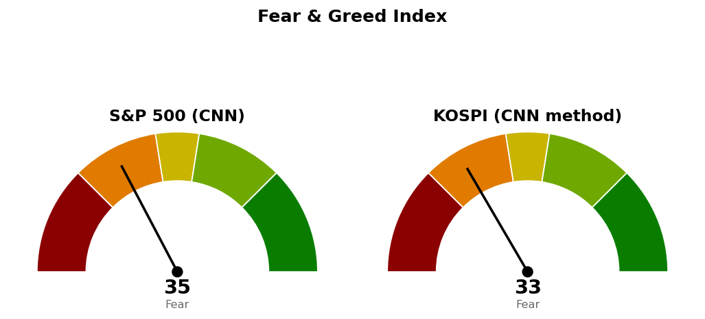

2026-10-29 장전 예측 4건: 4건 중 4건 적중(100.0%)
| 예측 | 근거 | 실제 | 판정 |
|---|---|---|---|
| 나스닥 종합 종가 26,261 하회 | 다음 지지 26,261 — 10/28 종가 26,550, 나스닥100 선물 -1.21%, 9월 개인소비지출 물가 가속 보도 | 종가 26,185 (-1.38%) | 적중 |
| S&P 500 전일 대비 하락 마감 | 10/28 종가 7,744(기준선 7,782 아래), S&P 500 선물 -0.41% | 종가 7,720 (-0.30%) | 적중 |
| 나스닥 종합, S&P 500 대비 약세 마감 | 나스닥100 선물 -1.21% 대 S&P 500 선물 -0.41% | -1.38% 대 S&P 500 -0.30% | 적중 |
| 헬스케어 (XLV), S&P 500 대비 강세 마감 | 20일 초과수익 +5.50% 4위, 일라이 릴리 연간 매출 가이던스 상향 보도 | +2.40% 대 S&P 500 -0.30% | 적중 |
US 최근 90일 누적 37건 중 29건 적중(78.4%) · 최근 20건 20건 중 14건 적중(70.0%)
빗나간 예측은 없습니다. 섹터 상대강도 예측은 누적 9건 중 4건 적중(44.4%)으로 종류 가운데 가장 낮고, 표본 37건으로는 적중률을 성과로 읽을 수 없습니다.
직전 시황은 10/29 미국 장전 회차이며, 가격은 10/28 미국 마감 후 회차가 등록한 값입니다.
| 직전 가격 | 판정 방식 | 10/29 결과 | 판정 |
|---|---|---|---|
| 나스닥 기준선 26,600 | 일봉 종가 상회 | 종가 26,185 · 고가 26,286 | 미충족 |
| 나스닥 다음 지지 26,261 | 일봉 종가 하회 | 종가 26,185 | 충족 |
| 나스닥 사다리 1차 26,023 | 장중 저가 도달 | 저가 26,053 | 미도달 (30포인트 위) |
| S&P 500 기준선 7,782 | 일봉 종가 상회 | 종가 7,720 · 고가 7,732 | 미충족 |
| S&P 500 다음 지지 7,701 | 일봉 종가 하회 | 저가 7,691 · 종가 7,720 | 미충족 (장중 하회 후 회복) |
| S&P 500 사다리 2차 7,578 · 취소선 7,517 | 장중 저가 / 일봉 종가 | 저가 7,691 | 미도달 · 지킴 |
| QQQ 730 · XLE 70.80 · XLP 94.21 · XLV 190달러 | 일봉 종가 상회 | 715.34 · 68.71 · 88.18 · 184.04달러 | 미충족 |
나스닥은 직전이 적은 "못 지키면" 가격 26,261까지 내려와 종가로 아래에 마감했고, 장중 저가 26,053은 사다리 1차 26,023에 30포인트 못 미쳤습니다. 직전 계획은 살아 있습니다 — 기준선·도착지·사다리·취소선은 그대로 두고, 26,261이 소진돼 나스닥 다음 지지만 그 아래 지지인 26,023으로 옮깁니다. S&P 500은 어느 가격도 판정되지 않아 전부 직전과 같습니다. 직전 장전이 건 하방 예측은 맞았습니다.
20일선·50일선은 지수이동평균입니다. 경로를 말할 근거가 없어 방향을 말하지 않고 기준선과 두 갈래만 냅니다.
종가 바로 위 26,261~26,317은 9번 반응한 가격대이며 10/29 이 가격대를 종가로 내줬습니다. 기준선 26,600은 종가에서 하루 평균 변동폭의 1.1배 위라 한 세션 안에 닿기 어려운 거리이고, 다음 지지 26,023은 0.43배 아래라 한 세션 안의 거리입니다. 180일 박스(21,425~27,401) 안쪽 판정은 중립(지지 테스트 거래량 혼조, 저점 절하, 상승봉 대 하락봉 거래량비 1.03)입니다.
10/29 장중 저가 7,691은 다음 지지 7,701을 10포인트 밑돌았다가 종가 7,720으로 20일선 위에 돌아왔습니다. 다음 지지는 종가에서 하루 평균 변동폭의 0.28배 아래입니다. 90일 박스(7,371~7,828) 안쪽 판정은 중립(저점 절하, 거래량비 0.99)입니다. 두 지수의 갈래가 다르며, 나스닥은 하방 갈래 안에 있고 S&P 500은 아직 판정 전입니다.
S&P 500 7,720이 200일 이동평균 7,306 위(+5.66%, 4/8부터)라 새 계획을 낼 수 있는 국면입니다.
| ETF | 등록일 | 현재 | 진입 | 손절 | 목표 | 상태 |
|---|---|---|---|---|---|---|
| Invesco QQQ (QQQ) | 2026-10-22 | 715 | 730 | 717 | 750 | 진입 대기 |
| 에너지 (XLE) | 2026-10-20 | 68.71 | 70.80 | 68.87 | 74.54 | 진입 대기 |
| 필수소비재 (XLP) | 2026-10-23 | 88.18 | 94.21 | 92.40 | 99.40 | 진입 대기 |
| 헬스케어 (XLV) | 2026-10-22 | 184 | 190 | 186 | 198 | 진입 대기 → 아래 새 계획으로 대체 |
모멘텀형(저항을 넘으면 그 방향이 이어진다는 전제, 자주 틀리고 소수가 크게 맞는 유형)이며 집행은 207달러 전량 매도, 트레일링 없음입니다. 조건 점검 9개 전부 통과(지수 대비 20일 초과수익 +10.03%, 상대강도선 60일 신고가, 최근 5일 최대 거래량 20일 평균의 1.71배). 1% 리스크 기준 비중은 계좌의 41.9%라 13%로 제한하며, 185달러에서 손절되면 손실은 계좌의 -0.34%입니다. 하루 변동폭이 가격의 1.6%이고 진입~목표가 ATR의 5.6배라 도구 적합성 문제는 없습니다. 눌림 매수는 진입가가 현재가 아래 2.51 ATR이고 구조 확인 전 선취형이라 돌파 확인형을 대표로 씁니다. 기존 XLV 계획(190/186/198)은 진입 전이라 대체합니다.
새 계획은 XLV 하나입니다. XLP 돌파는 1:0.31, SPY 돌파는 1:0.37로 패스이고, 두 ETF의 눌림 매수는 진입가가 현재가 아래이며 박스 안쪽이 분산 우위로 판정됐습니다. QQQ 회복 매수는 1:0.51로 패스(20일선 아래 · 20일선이 50일선 아래 · 지수 대비 20일 초과수익 -4.30%)이며, 등록된 QQQ 진입선 730달러 바로 위 729.79~734.58달러에 9번 반응한 저항이 있습니다.
상위 2개는 헬스케어 · 필수소비재이며, 직전 1위였던 에너지는 3위로 내려갔습니다. 한국은 헬스케어(+7.38%) · 2차전지(+6.81%)가 20일 상위입니다.
종목 발굴: 200개를 훑어 1차 21개, 구조 판정 12개 중 3개가 남았습니다(박스 판정 불가 3개, 추격 비권장 2개 포함 탈락). 1순위 FEMSA (FMX, 필수소비재)는 이 브리핑 뒤에 배치가 정식 리포트를 씁니다. 엘레번스 헬스 (ELV)와 카디널 헬스 (CAH)는 헬스케어 후보이며 리포트가 아닙니다 — 텔레그램으로 종목명을 보내면 리포트가 나갑니다.
| 항목 | 값 | 직전 대비 |
|---|---|---|
| 미국 경기선행지수 | 101.00 (9월) | 전월 대비 +0.05 · 직전 회차와 같은 값 |
| 한국 경기선행지수 | 102.53 (9월) | 전월 대비 -0.13 · 직전 회차와 같은 값 |
| 미 10년 명목금리 | 확정 5.05% (10/28) · 지수 시세 4.989% (10/29) | 확정 +0.06%포인트 · 시세 전일 5.045% |
| 미 10년 기대물가 | 2.35% (10/29) | -0.03%포인트 |
| 미 10년 실질금리 | 2.67% (10/28) | +0.03%포인트 |
| 유가 (WTI) | 확정 103.37달러 (10/27) · 선물 102.86달러 (10/29) | 확정 갱신 없음 · 선물 +0.08% |
| 달러지수 (광의) | 121.32 (10/23) | 갱신 없음 |
| 변동성지수 (VIX) | 17.20 (10/29, 장중 16.21~17.36) | 전일 16.91 · 백분위 산출물 없음 |
경기선행지수는 장기 평균을 100으로 놓고 경기 방향을 몇 달 앞서 보여주는 OECD 지표이며, 새 발표가 없어 해석을 바꾸지 않습니다. 10/28 명목금리 상승 +0.06%포인트는 실질금리와 기대물가가 +0.03%포인트씩 나눠 가졌고, 10/29에는 10년물 시세가 0.056%포인트 내리고 기대물가도 0.03%포인트 내렸습니다(10/29 실질금리는 아직 없음). 금 · 장기채 가격은 받지 않아 실질금리 방향과의 일치 여부는 적지 않습니다. 이 절은 지수 기준선에 반영하지 않습니다.

S&P 500은 CNN 공식값이며 1주 전 20.0, 1개월 전 31.1이었습니다. 점수를 끌어내린 항목은 안전자산 선호 9.6, 풋/콜 비율 29.8, 주가 강도 32.0이고, 가장 높은 항목은 변동성 · 정크본드 수요 50.0입니다. 코스피는 CNN 방식을 한국 데이터로 재구성한 값이며 공식 지수가 아닙니다. 일곱 항목을 모두 썼고, 10/30 자료에 주가 강도 · 주가 폭 · 풋/콜 비율이 아직 없어 기준일은 10/29입니다. 가장 낮은 항목은 모멘텀 9.0, 가장 높은 항목은 풋/콜 비율 75.0입니다.
| 날짜 (미국) | 이벤트 | 확인할 것 |
|---|---|---|
| 10/30 | 일정 조회상 발표 없음 · 인텔 실적 반응 | 나스닥 26,023 · S&P 500 7,701 대비 종가 |
| 11/5 | 실업수당 청구 | 고용 |
| 11/6 | 고용보고서 · 실업률 | 고용 |
| 11/10 | 소비자물가 | 물가 |
| 11/12 | 실업수당 청구 | 고용 |
1. 매수 쪽 — 나스닥은 26,023에 장중 저가로 닿으면 계좌의 2%, 25,846에 닿으면 2%를 더 삽니다. S&P 500은 2차 7,578에 장중 저가로 닿으면 계좌의 3%를 삽니다. 2. 일봉 종가로 나스닥 25,685 아래면 남은 회차를 멈추고 산 회차를 다음 세션에 전량 매도 (사다리 취소), S&P 500 7,517 아래면 1차(7,653)를 같은 방식으로 전량 매도 (사다리 취소)합니다. 3. XLV 진입 대기(새 계획) — 일봉 종가 190달러 상회 시 다음 세션 계좌의 13% 이내로 진입, 185달러 장중 도달 시 전량 매도 (손절), 207달러에서 전량 매도 (목표 도달). 4. QQQ 진입 대기 — 일봉 종가 730달러 상회 시 계좌의 13% 이내로 진입, 717달러 장중 도달 시 전량 매도 (손절), 750달러에서 전량 매도 (목표 도달). 5. XLE 진입 대기 — 일봉 종가 70.80달러 상회 시 계좌의 13% 이내로 진입, 68.87달러 장중 도달 시 전량 매도 (손절), 74.54달러에서 전량 매도 (목표 도달). 6. XLP 진입 대기 — 일봉 종가 94.21달러 상회 시 계좌의 13% 이내로 진입, 92.40달러 장중 도달 시 전량 매도 (손절), 99.40달러에서 전량 매도 (목표 도달).
다음 세션에 볼 것 — 인텔 실적 반응 속에 나스닥이 26,023(사다리 1차)에 장중 닿는지, 그리고 그 위에서 마감하는지입니다.
ATR: 하루 평균 변동폭(14일).
지수이동평균: 최근 가격에 더 무게를 둔 평균.
상대강도지수(RSI): 최근 14일 상승폭과 하락폭의 비율로 과열·침체를 보는 0~100 지표.
VIX: S&P 500 옵션 가격에서 뽑은 향후 30일 예상 변동성.